from sklearn.preprocessing import StandardScaler
from sklearn.decomposition import PCA
import pandas as pd
import matplotlib.pyplot as plt
from latex import latexify, format_axes
import numpy as np
import tsfel
from sklearn.tree import DecisionTreeClassifier
from sklearn.tree import export_graphviz
from sklearn import tree
import graphviz
from sklearn.metrics import classification_report, confusion_matrix, accuracy_score
import seaborn as sns
from MakeDataset import *
%matplotlib inline
# Retina
%config InlineBackend.figure_format = 'retina'Template for PCA Plotting
def PCA_Plot(dataFrame):
latexify(fig_width = 6, columns = 2)
for label, color in zip((classes), ("b", "g", "r", "cyan", "magenta", "yellow")):
plt.scatter(dataFrame[dataFrame["Labels"] == classes[label]].iloc[:, 0], dataFrame[dataFrame["Labels"] == classes[label]].iloc[:, 1], c = color, s = 10, label = label)
plt.title("108 Subject Samples in 2D for 6 activity classes")
plt.grid()
plt.legend(fontsize = 7)
format_axes(plt.gca())
plt.show()\((a_x, a_y, a_z)\)
aXYZ_Xtrain = X_train[:, :, 0], X_train[:, :, 1], X_train[:, :, 2]\((a_x^2 + a_y^2 + a_z^2)\)
X_train_TS = np.sum(np.square(X_train), axis = -1)
X_test_TS = np.sum(np.square(X_test), axis = -1)
X_val_TS = np.sum(np.square(X_val), axis = -1)
print(X_train_TS.shape, X_test_TS.shape, X_val_TS.shape)(108, 500) (36, 500) (36, 500)DataFrame for \((a_x^2 + a_y^2 + a_z^2)\) \(108\) timeseries
df = pd.DataFrame(X_train_TS)
df| 0 | 1 | 2 | 3 | 4 | 5 | 6 | 7 | 8 | 9 | ... | 490 | 491 | 492 | 493 | 494 | 495 | 496 | 497 | 498 | 499 | |
|---|---|---|---|---|---|---|---|---|---|---|---|---|---|---|---|---|---|---|---|---|---|
| 0 | 1.056837 | 1.055002 | 1.055806 | 1.056825 | 1.056743 | 1.058030 | 1.059746 | 1.056402 | 1.051561 | 1.051040 | ... | 1.059888 | 1.052544 | 1.056687 | 1.060374 | 1.060270 | 1.057576 | 1.050376 | 1.052854 | 1.056003 | 1.050580 |
| 1 | 1.083240 | 1.076504 | 1.071849 | 1.070542 | 1.073735 | 1.069331 | 1.065576 | 1.070615 | 1.073486 | 1.074425 | ... | 1.076160 | 1.072783 | 1.070026 | 1.066329 | 1.064303 | 1.069655 | 1.073976 | 1.075890 | 1.078382 | 1.072455 |
| 2 | 1.138189 | 1.118926 | 1.010193 | 0.908460 | 0.877500 | 0.799665 | 0.755336 | 0.604213 | 0.398809 | 0.387867 | ... | 1.131734 | 1.211883 | 1.395558 | 1.574451 | 1.786266 | 2.000218 | 2.163595 | 2.539505 | 2.744447 | 2.195609 |
| 3 | 1.181108 | 1.152283 | 1.143152 | 1.270364 | 1.238777 | 1.149924 | 1.015107 | 0.984543 | 1.273980 | 1.684522 | ... | 0.621903 | 1.029622 | 1.784374 | 2.366215 | 2.621218 | 2.250886 | 1.741832 | 1.685947 | 1.807674 | 1.804153 |
| 4 | 1.011227 | 1.017584 | 1.013233 | 1.011926 | 1.009752 | 1.005219 | 1.001461 | 1.005883 | 1.007562 | 1.007073 | ... | 1.009191 | 1.006528 | 1.004264 | 1.003962 | 1.007311 | 1.005560 | 0.999966 | 0.998143 | 1.002371 | 1.010588 |
| ... | ... | ... | ... | ... | ... | ... | ... | ... | ... | ... | ... | ... | ... | ... | ... | ... | ... | ... | ... | ... | ... |
| 103 | 2.865182 | 4.214804 | 3.753230 | 3.061401 | 2.623248 | 2.179369 | 1.739349 | 1.163332 | 0.690809 | 0.565457 | ... | 0.356185 | 0.427389 | 0.798711 | 1.197703 | 1.243965 | 0.946267 | 0.564336 | 0.293897 | 0.148865 | 0.159150 |
| 104 | 1.481487 | 1.741766 | 1.863997 | 2.701391 | 3.711884 | 2.941636 | 1.958033 | 1.226824 | 0.424725 | 0.531432 | ... | 0.933847 | 1.111377 | 1.231115 | 0.981100 | 0.879569 | 0.951810 | 1.042146 | 1.437269 | 1.472829 | 1.380977 |
| 105 | 1.059227 | 1.066083 | 1.065851 | 1.062518 | 1.058762 | 1.059328 | 1.061447 | 1.058565 | 1.055911 | 1.054685 | ... | 1.059269 | 1.056765 | 1.065482 | 1.075214 | 1.068180 | 1.058619 | 1.062407 | 1.066245 | 1.065190 | 1.068413 |
| 106 | 0.822379 | 0.796867 | 0.860853 | 0.768546 | 0.678476 | 0.590875 | 0.531713 | 0.612083 | 0.699120 | 0.818263 | ... | 0.773623 | 0.715825 | 0.680630 | 0.717506 | 0.754631 | 0.822995 | 0.853608 | 0.882437 | 0.884731 | 0.870595 |
| 107 | 1.059330 | 1.024984 | 0.890988 | 1.011086 | 0.924324 | 0.873101 | 0.833131 | 0.642193 | 0.606104 | 0.555885 | ... | 0.616638 | 0.569460 | 0.593311 | 0.642203 | 0.737246 | 0.780754 | 0.758168 | 0.791968 | 0.890852 | 1.053665 |
108 rows × 500 columns
Defining Named CLasses
classesN = {1 : 'WALKING', 2 : 'WALKING_UPSTAIRS', 3 : 'WALKING_DOWNSTAIRS', 4 : 'SITTING', 5 : 'STANDING', 6 : 'LAYING'}
namedLabel = [classesN[i] for i in y_train]
classesN{1: 'WALKING',
2: 'WALKING_UPSTAIRS',
3: 'WALKING_DOWNSTAIRS',
4: 'SITTING',
5: 'STANDING',
6: 'LAYING'}Feature Extraction on the timeseries using TSFEL
cfg = tsfel.get_features_by_domain()
dataFrames = []
for i in df.index:
dataFrames.append(tsfel.time_series_features_extractor(cfg, df.iloc[i, :-1], fs = 50))
dfN = pd.concat(dataFrames, axis = 0)dfN["Labels"] = y_train
dfN["Subject"] = range(1, 109)
dfN["Named_Subject"] = namedLabel
dfN.to_csv("FeaturesTimeSeries.csv")Featurized Time Series with \(383\) features
dfN| 0_Absolute energy | 0_Area under the curve | 0_Autocorrelation | 0_Average power | 0_Centroid | 0_ECDF Percentile Count_0 | 0_ECDF Percentile Count_1 | 0_ECDF Percentile_0 | 0_ECDF Percentile_1 | 0_ECDF_0 | ... | 0_Wavelet variance_3 | 0_Wavelet variance_4 | 0_Wavelet variance_5 | 0_Wavelet variance_6 | 0_Wavelet variance_7 | 0_Wavelet variance_8 | 0_Zero crossing rate | Labels | Subject | Named_Subject | |
|---|---|---|---|---|---|---|---|---|---|---|---|---|---|---|---|---|---|---|---|---|---|
| 0 | 558.990647 | 10.539676 | 558.990647 | 56.123559 | 4.988923 | 99.0 | 399.0 | 1.052052 | 1.064478 | 0.002004 | ... | 0.025006 | 0.037278 | 0.052396 | 0.070251 | 0.090653 | 0.113484 | 0.0 | 5 | 1 | STANDING |
| 0 | 574.390274 | 10.683732 | 574.390274 | 57.669706 | 4.977065 | 99.0 | 399.0 | 1.064356 | 1.081232 | 0.002004 | ... | 0.025755 | 0.038662 | 0.053818 | 0.071138 | 0.090822 | 0.113121 | 0.0 | 5 | 2 | STANDING |
| 0 | 786.923541 | 11.328686 | 786.923541 | 79.008388 | 5.026153 | 99.0 | 399.0 | 0.726070 | 1.395558 | 0.002004 | ... | 0.999999 | 1.591255 | 2.322541 | 3.066285 | 3.664628 | 3.988167 | 0.0 | 2 | 3 | WALKING_UPSTAIRS |
| 0 | 929.960228 | 11.865417 | 929.960228 | 93.369501 | 5.165735 | 99.0 | 399.0 | 0.640615 | 1.741832 | 0.002004 | ... | 1.909505 | 2.832818 | 3.808026 | 4.598930 | 4.948531 | 4.748614 | 0.0 | 3 | 4 | WALKING_DOWNSTAIRS |
| 0 | 504.910523 | 10.018665 | 504.910523 | 50.693828 | 4.978145 | 99.0 | 399.0 | 1.001615 | 1.009949 | 0.002004 | ... | 0.021207 | 0.032697 | 0.046494 | 0.062523 | 0.080705 | 0.100957 | 0.0 | 6 | 5 | LAYING |
| ... | ... | ... | ... | ... | ... | ... | ... | ... | ... | ... | ... | ... | ... | ... | ... | ... | ... | ... | ... | ... | ... |
| 0 | 1568.256890 | 13.254750 | 1568.256890 | 157.455511 | 5.313609 | 99.0 | 399.0 | 0.401499 | 2.623248 | 0.002004 | ... | 8.614639 | 12.291892 | 14.178359 | 13.191980 | 10.140035 | 6.664172 | 0.0 | 3 | 104 | WALKING_DOWNSTAIRS |
| 0 | 922.269555 | 11.826549 | 922.269555 | 92.597345 | 4.866526 | 99.0 | 399.0 | 0.640476 | 1.665380 | 0.002004 | ... | 2.112537 | 2.891478 | 3.289327 | 3.139391 | 2.545833 | 1.786699 | 0.0 | 1 | 105 | WALKING |
| 0 | 567.123251 | 10.618080 | 567.123251 | 56.940085 | 4.977900 | 99.0 | 399.0 | 1.061659 | 1.070245 | 0.002004 | ... | 0.023392 | 0.035887 | 0.051075 | 0.068907 | 0.089307 | 0.112172 | 0.0 | 5 | 106 | STANDING |
| 0 | 745.722170 | 11.132367 | 745.722170 | 74.871704 | 4.944697 | 99.0 | 399.0 | 0.707780 | 1.428686 | 0.002004 | ... | 0.934469 | 1.540069 | 2.286965 | 3.033829 | 3.571527 | 3.743132 | 0.0 | 2 | 107 | WALKING_UPSTAIRS |
| 0 | 749.384758 | 11.142791 | 749.384758 | 75.239434 | 4.964639 | 99.0 | 399.0 | 0.750677 | 1.430162 | 0.002004 | ... | 1.027339 | 1.560717 | 2.175698 | 2.781563 | 3.202756 | 3.294759 | 0.0 | 2 | 108 | WALKING_UPSTAIRS |
108 rows × 386 columns
for i, feature in enumerate(dfN.columns[:-3]):
print(f"{i} -> {feature}")0 -> 0_Absolute energy
1 -> 0_Area under the curve
2 -> 0_Autocorrelation
3 -> 0_Average power
4 -> 0_Centroid
5 -> 0_ECDF Percentile Count_0
6 -> 0_ECDF Percentile Count_1
7 -> 0_ECDF Percentile_0
8 -> 0_ECDF Percentile_1
9 -> 0_ECDF_0
10 -> 0_ECDF_1
11 -> 0_ECDF_2
12 -> 0_ECDF_3
13 -> 0_ECDF_4
14 -> 0_ECDF_5
15 -> 0_ECDF_6
16 -> 0_ECDF_7
17 -> 0_ECDF_8
18 -> 0_ECDF_9
19 -> 0_Entropy
20 -> 0_FFT mean coefficient_0
21 -> 0_FFT mean coefficient_1
22 -> 0_FFT mean coefficient_10
23 -> 0_FFT mean coefficient_100
24 -> 0_FFT mean coefficient_101
25 -> 0_FFT mean coefficient_102
26 -> 0_FFT mean coefficient_103
27 -> 0_FFT mean coefficient_104
28 -> 0_FFT mean coefficient_105
29 -> 0_FFT mean coefficient_106
30 -> 0_FFT mean coefficient_107
31 -> 0_FFT mean coefficient_108
32 -> 0_FFT mean coefficient_109
33 -> 0_FFT mean coefficient_11
34 -> 0_FFT mean coefficient_110
35 -> 0_FFT mean coefficient_111
36 -> 0_FFT mean coefficient_112
37 -> 0_FFT mean coefficient_113
38 -> 0_FFT mean coefficient_114
39 -> 0_FFT mean coefficient_115
40 -> 0_FFT mean coefficient_116
41 -> 0_FFT mean coefficient_117
42 -> 0_FFT mean coefficient_118
43 -> 0_FFT mean coefficient_119
44 -> 0_FFT mean coefficient_12
45 -> 0_FFT mean coefficient_120
46 -> 0_FFT mean coefficient_121
47 -> 0_FFT mean coefficient_122
48 -> 0_FFT mean coefficient_123
49 -> 0_FFT mean coefficient_124
50 -> 0_FFT mean coefficient_125
51 -> 0_FFT mean coefficient_126
52 -> 0_FFT mean coefficient_127
53 -> 0_FFT mean coefficient_128
54 -> 0_FFT mean coefficient_129
55 -> 0_FFT mean coefficient_13
56 -> 0_FFT mean coefficient_130
57 -> 0_FFT mean coefficient_131
58 -> 0_FFT mean coefficient_132
59 -> 0_FFT mean coefficient_133
60 -> 0_FFT mean coefficient_134
61 -> 0_FFT mean coefficient_135
62 -> 0_FFT mean coefficient_136
63 -> 0_FFT mean coefficient_137
64 -> 0_FFT mean coefficient_138
65 -> 0_FFT mean coefficient_139
66 -> 0_FFT mean coefficient_14
67 -> 0_FFT mean coefficient_140
68 -> 0_FFT mean coefficient_141
69 -> 0_FFT mean coefficient_142
70 -> 0_FFT mean coefficient_143
71 -> 0_FFT mean coefficient_144
72 -> 0_FFT mean coefficient_145
73 -> 0_FFT mean coefficient_146
74 -> 0_FFT mean coefficient_147
75 -> 0_FFT mean coefficient_148
76 -> 0_FFT mean coefficient_149
77 -> 0_FFT mean coefficient_15
78 -> 0_FFT mean coefficient_150
79 -> 0_FFT mean coefficient_151
80 -> 0_FFT mean coefficient_152
81 -> 0_FFT mean coefficient_153
82 -> 0_FFT mean coefficient_154
83 -> 0_FFT mean coefficient_155
84 -> 0_FFT mean coefficient_156
85 -> 0_FFT mean coefficient_157
86 -> 0_FFT mean coefficient_158
87 -> 0_FFT mean coefficient_159
88 -> 0_FFT mean coefficient_16
89 -> 0_FFT mean coefficient_160
90 -> 0_FFT mean coefficient_161
91 -> 0_FFT mean coefficient_162
92 -> 0_FFT mean coefficient_163
93 -> 0_FFT mean coefficient_164
94 -> 0_FFT mean coefficient_165
95 -> 0_FFT mean coefficient_166
96 -> 0_FFT mean coefficient_167
97 -> 0_FFT mean coefficient_168
98 -> 0_FFT mean coefficient_169
99 -> 0_FFT mean coefficient_17
100 -> 0_FFT mean coefficient_170
101 -> 0_FFT mean coefficient_171
102 -> 0_FFT mean coefficient_172
103 -> 0_FFT mean coefficient_173
104 -> 0_FFT mean coefficient_174
105 -> 0_FFT mean coefficient_175
106 -> 0_FFT mean coefficient_176
107 -> 0_FFT mean coefficient_177
108 -> 0_FFT mean coefficient_178
109 -> 0_FFT mean coefficient_179
110 -> 0_FFT mean coefficient_18
111 -> 0_FFT mean coefficient_180
112 -> 0_FFT mean coefficient_181
113 -> 0_FFT mean coefficient_182
114 -> 0_FFT mean coefficient_183
115 -> 0_FFT mean coefficient_184
116 -> 0_FFT mean coefficient_185
117 -> 0_FFT mean coefficient_186
118 -> 0_FFT mean coefficient_187
119 -> 0_FFT mean coefficient_188
120 -> 0_FFT mean coefficient_189
121 -> 0_FFT mean coefficient_19
122 -> 0_FFT mean coefficient_190
123 -> 0_FFT mean coefficient_191
124 -> 0_FFT mean coefficient_192
125 -> 0_FFT mean coefficient_193
126 -> 0_FFT mean coefficient_194
127 -> 0_FFT mean coefficient_195
128 -> 0_FFT mean coefficient_196
129 -> 0_FFT mean coefficient_197
130 -> 0_FFT mean coefficient_198
131 -> 0_FFT mean coefficient_199
132 -> 0_FFT mean coefficient_2
133 -> 0_FFT mean coefficient_20
134 -> 0_FFT mean coefficient_200
135 -> 0_FFT mean coefficient_201
136 -> 0_FFT mean coefficient_202
137 -> 0_FFT mean coefficient_203
138 -> 0_FFT mean coefficient_204
139 -> 0_FFT mean coefficient_205
140 -> 0_FFT mean coefficient_206
141 -> 0_FFT mean coefficient_207
142 -> 0_FFT mean coefficient_208
143 -> 0_FFT mean coefficient_209
144 -> 0_FFT mean coefficient_21
145 -> 0_FFT mean coefficient_210
146 -> 0_FFT mean coefficient_211
147 -> 0_FFT mean coefficient_212
148 -> 0_FFT mean coefficient_213
149 -> 0_FFT mean coefficient_214
150 -> 0_FFT mean coefficient_215
151 -> 0_FFT mean coefficient_216
152 -> 0_FFT mean coefficient_217
153 -> 0_FFT mean coefficient_218
154 -> 0_FFT mean coefficient_219
155 -> 0_FFT mean coefficient_22
156 -> 0_FFT mean coefficient_220
157 -> 0_FFT mean coefficient_221
158 -> 0_FFT mean coefficient_222
159 -> 0_FFT mean coefficient_223
160 -> 0_FFT mean coefficient_224
161 -> 0_FFT mean coefficient_225
162 -> 0_FFT mean coefficient_226
163 -> 0_FFT mean coefficient_227
164 -> 0_FFT mean coefficient_228
165 -> 0_FFT mean coefficient_229
166 -> 0_FFT mean coefficient_23
167 -> 0_FFT mean coefficient_230
168 -> 0_FFT mean coefficient_231
169 -> 0_FFT mean coefficient_232
170 -> 0_FFT mean coefficient_233
171 -> 0_FFT mean coefficient_234
172 -> 0_FFT mean coefficient_235
173 -> 0_FFT mean coefficient_236
174 -> 0_FFT mean coefficient_237
175 -> 0_FFT mean coefficient_238
176 -> 0_FFT mean coefficient_239
177 -> 0_FFT mean coefficient_24
178 -> 0_FFT mean coefficient_240
179 -> 0_FFT mean coefficient_241
180 -> 0_FFT mean coefficient_242
181 -> 0_FFT mean coefficient_243
182 -> 0_FFT mean coefficient_244
183 -> 0_FFT mean coefficient_245
184 -> 0_FFT mean coefficient_246
185 -> 0_FFT mean coefficient_247
186 -> 0_FFT mean coefficient_248
187 -> 0_FFT mean coefficient_249
188 -> 0_FFT mean coefficient_25
189 -> 0_FFT mean coefficient_26
190 -> 0_FFT mean coefficient_27
191 -> 0_FFT mean coefficient_28
192 -> 0_FFT mean coefficient_29
193 -> 0_FFT mean coefficient_3
194 -> 0_FFT mean coefficient_30
195 -> 0_FFT mean coefficient_31
196 -> 0_FFT mean coefficient_32
197 -> 0_FFT mean coefficient_33
198 -> 0_FFT mean coefficient_34
199 -> 0_FFT mean coefficient_35
200 -> 0_FFT mean coefficient_36
201 -> 0_FFT mean coefficient_37
202 -> 0_FFT mean coefficient_38
203 -> 0_FFT mean coefficient_39
204 -> 0_FFT mean coefficient_4
205 -> 0_FFT mean coefficient_40
206 -> 0_FFT mean coefficient_41
207 -> 0_FFT mean coefficient_42
208 -> 0_FFT mean coefficient_43
209 -> 0_FFT mean coefficient_44
210 -> 0_FFT mean coefficient_45
211 -> 0_FFT mean coefficient_46
212 -> 0_FFT mean coefficient_47
213 -> 0_FFT mean coefficient_48
214 -> 0_FFT mean coefficient_49
215 -> 0_FFT mean coefficient_5
216 -> 0_FFT mean coefficient_50
217 -> 0_FFT mean coefficient_51
218 -> 0_FFT mean coefficient_52
219 -> 0_FFT mean coefficient_53
220 -> 0_FFT mean coefficient_54
221 -> 0_FFT mean coefficient_55
222 -> 0_FFT mean coefficient_56
223 -> 0_FFT mean coefficient_57
224 -> 0_FFT mean coefficient_58
225 -> 0_FFT mean coefficient_59
226 -> 0_FFT mean coefficient_6
227 -> 0_FFT mean coefficient_60
228 -> 0_FFT mean coefficient_61
229 -> 0_FFT mean coefficient_62
230 -> 0_FFT mean coefficient_63
231 -> 0_FFT mean coefficient_64
232 -> 0_FFT mean coefficient_65
233 -> 0_FFT mean coefficient_66
234 -> 0_FFT mean coefficient_67
235 -> 0_FFT mean coefficient_68
236 -> 0_FFT mean coefficient_69
237 -> 0_FFT mean coefficient_7
238 -> 0_FFT mean coefficient_70
239 -> 0_FFT mean coefficient_71
240 -> 0_FFT mean coefficient_72
241 -> 0_FFT mean coefficient_73
242 -> 0_FFT mean coefficient_74
243 -> 0_FFT mean coefficient_75
244 -> 0_FFT mean coefficient_76
245 -> 0_FFT mean coefficient_77
246 -> 0_FFT mean coefficient_78
247 -> 0_FFT mean coefficient_79
248 -> 0_FFT mean coefficient_8
249 -> 0_FFT mean coefficient_80
250 -> 0_FFT mean coefficient_81
251 -> 0_FFT mean coefficient_82
252 -> 0_FFT mean coefficient_83
253 -> 0_FFT mean coefficient_84
254 -> 0_FFT mean coefficient_85
255 -> 0_FFT mean coefficient_86
256 -> 0_FFT mean coefficient_87
257 -> 0_FFT mean coefficient_88
258 -> 0_FFT mean coefficient_89
259 -> 0_FFT mean coefficient_9
260 -> 0_FFT mean coefficient_90
261 -> 0_FFT mean coefficient_91
262 -> 0_FFT mean coefficient_92
263 -> 0_FFT mean coefficient_93
264 -> 0_FFT mean coefficient_94
265 -> 0_FFT mean coefficient_95
266 -> 0_FFT mean coefficient_96
267 -> 0_FFT mean coefficient_97
268 -> 0_FFT mean coefficient_98
269 -> 0_FFT mean coefficient_99
270 -> 0_Fundamental frequency
271 -> 0_Histogram_0
272 -> 0_Histogram_1
273 -> 0_Histogram_2
274 -> 0_Histogram_3
275 -> 0_Histogram_4
276 -> 0_Histogram_5
277 -> 0_Histogram_6
278 -> 0_Histogram_7
279 -> 0_Histogram_8
280 -> 0_Histogram_9
281 -> 0_Human range energy
282 -> 0_Interquartile range
283 -> 0_Kurtosis
284 -> 0_LPCC_0
285 -> 0_LPCC_1
286 -> 0_LPCC_10
287 -> 0_LPCC_11
288 -> 0_LPCC_2
289 -> 0_LPCC_3
290 -> 0_LPCC_4
291 -> 0_LPCC_5
292 -> 0_LPCC_6
293 -> 0_LPCC_7
294 -> 0_LPCC_8
295 -> 0_LPCC_9
296 -> 0_MFCC_0
297 -> 0_MFCC_1
298 -> 0_MFCC_10
299 -> 0_MFCC_11
300 -> 0_MFCC_2
301 -> 0_MFCC_3
302 -> 0_MFCC_4
303 -> 0_MFCC_5
304 -> 0_MFCC_6
305 -> 0_MFCC_7
306 -> 0_MFCC_8
307 -> 0_MFCC_9
308 -> 0_Max
309 -> 0_Max power spectrum
310 -> 0_Maximum frequency
311 -> 0_Mean
312 -> 0_Mean absolute deviation
313 -> 0_Mean absolute diff
314 -> 0_Mean diff
315 -> 0_Median
316 -> 0_Median absolute deviation
317 -> 0_Median absolute diff
318 -> 0_Median diff
319 -> 0_Median frequency
320 -> 0_Min
321 -> 0_Negative turning points
322 -> 0_Neighbourhood peaks
323 -> 0_Peak to peak distance
324 -> 0_Positive turning points
325 -> 0_Power bandwidth
326 -> 0_Root mean square
327 -> 0_Signal distance
328 -> 0_Skewness
329 -> 0_Slope
330 -> 0_Spectral centroid
331 -> 0_Spectral decrease
332 -> 0_Spectral distance
333 -> 0_Spectral entropy
334 -> 0_Spectral kurtosis
335 -> 0_Spectral positive turning points
336 -> 0_Spectral roll-off
337 -> 0_Spectral roll-on
338 -> 0_Spectral skewness
339 -> 0_Spectral slope
340 -> 0_Spectral spread
341 -> 0_Spectral variation
342 -> 0_Standard deviation
343 -> 0_Sum absolute diff
344 -> 0_Variance
345 -> 0_Wavelet absolute mean_0
346 -> 0_Wavelet absolute mean_1
347 -> 0_Wavelet absolute mean_2
348 -> 0_Wavelet absolute mean_3
349 -> 0_Wavelet absolute mean_4
350 -> 0_Wavelet absolute mean_5
351 -> 0_Wavelet absolute mean_6
352 -> 0_Wavelet absolute mean_7
353 -> 0_Wavelet absolute mean_8
354 -> 0_Wavelet energy_0
355 -> 0_Wavelet energy_1
356 -> 0_Wavelet energy_2
357 -> 0_Wavelet energy_3
358 -> 0_Wavelet energy_4
359 -> 0_Wavelet energy_5
360 -> 0_Wavelet energy_6
361 -> 0_Wavelet energy_7
362 -> 0_Wavelet energy_8
363 -> 0_Wavelet entropy
364 -> 0_Wavelet standard deviation_0
365 -> 0_Wavelet standard deviation_1
366 -> 0_Wavelet standard deviation_2
367 -> 0_Wavelet standard deviation_3
368 -> 0_Wavelet standard deviation_4
369 -> 0_Wavelet standard deviation_5
370 -> 0_Wavelet standard deviation_6
371 -> 0_Wavelet standard deviation_7
372 -> 0_Wavelet standard deviation_8
373 -> 0_Wavelet variance_0
374 -> 0_Wavelet variance_1
375 -> 0_Wavelet variance_2
376 -> 0_Wavelet variance_3
377 -> 0_Wavelet variance_4
378 -> 0_Wavelet variance_5
379 -> 0_Wavelet variance_6
380 -> 0_Wavelet variance_7
381 -> 0_Wavelet variance_8
382 -> 0_Zero crossing ratepalette = sns.color_palette("mako_r", 6)
def FeaturePlot(dataFrame, feature = None, idx = None):
latexify(columns = 2, fig_width = 8)
if idx is None:
sns.lineplot(data = dataFrame, x = "Subject", y = feature, hue = "Named_Subject", style = "Named_Subject", markers = True, dashes = False, palette = palette)
else:
sns.lineplot(data = dataFrame, x ="Subject", y = dataFrame.columns[idx], hue = "Named_Subject", style = "Named_Subject", markers = True, dashes = False, palette = palette)
plt.show()features_sel = ["0_Area under the curve", "0_Mean", "0_Variance", "0_Peak to peak distance", "0_Mean absolute deviation", "Labels", "Subject", "Named_Subject"]Power Bandwidth
FeaturePlot(dfN, idx = 325)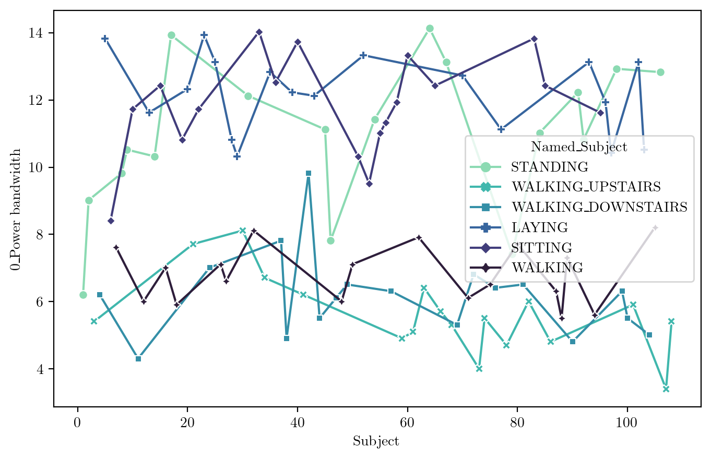
Signal Distance
FeaturePlot(dfN, idx = 327)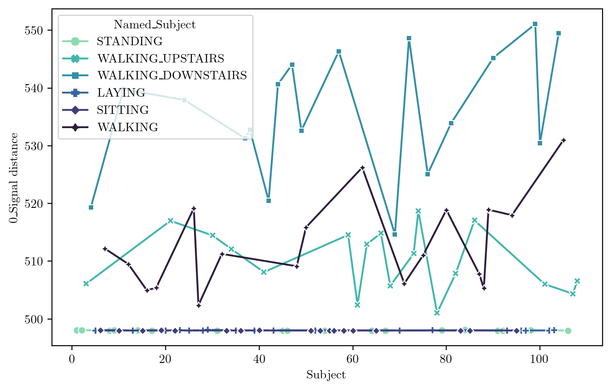
Negative Turning Point
FeaturePlot(dfN, idx = 321)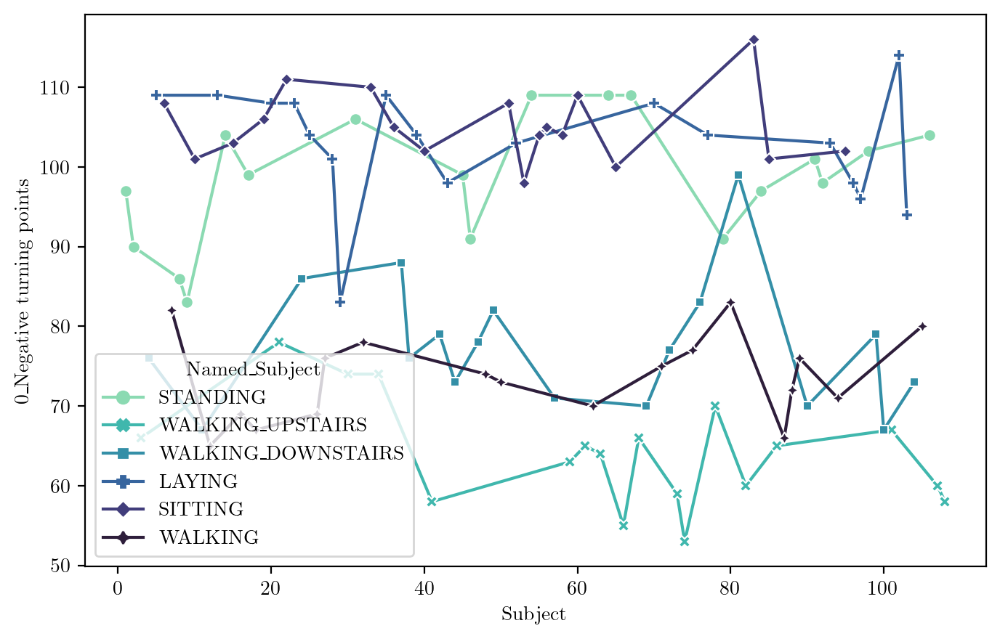
Maximum Frequency
FeaturePlot(dfN, idx = 310)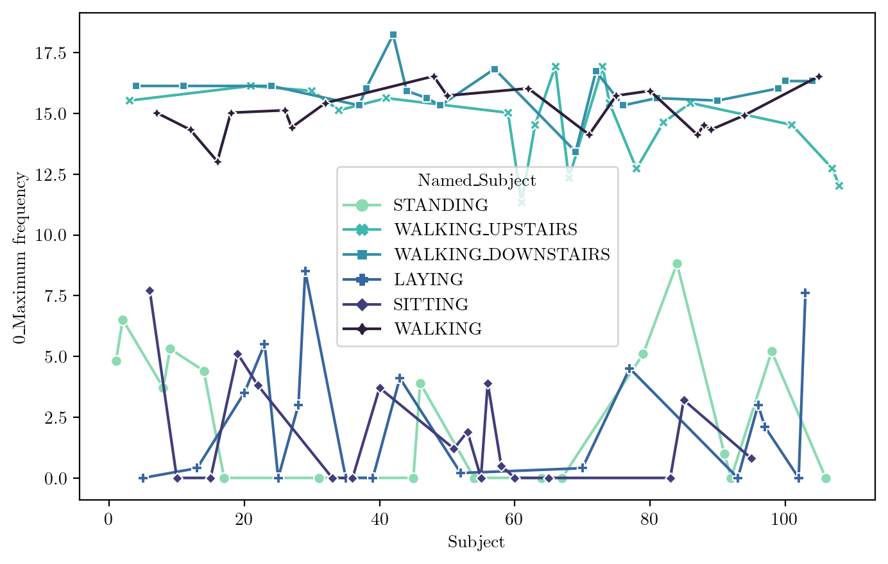
Area under Curve
FeaturePlot(dfN, feature = features_sel[0])Mean
FeaturePlot(dfN, feature = features_sel[1])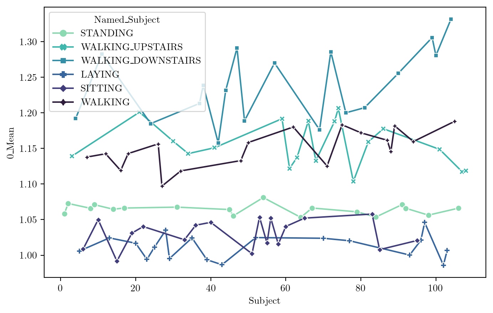
Variance
FeaturePlot(dfN, feature = features_sel[2])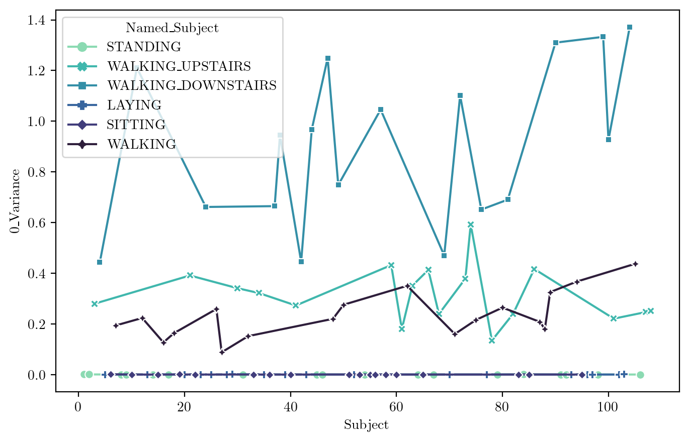
TIME SERIES PEAK-TO-PEAK DISTANCE
FeaturePlot(dfN, feature = features_sel[3])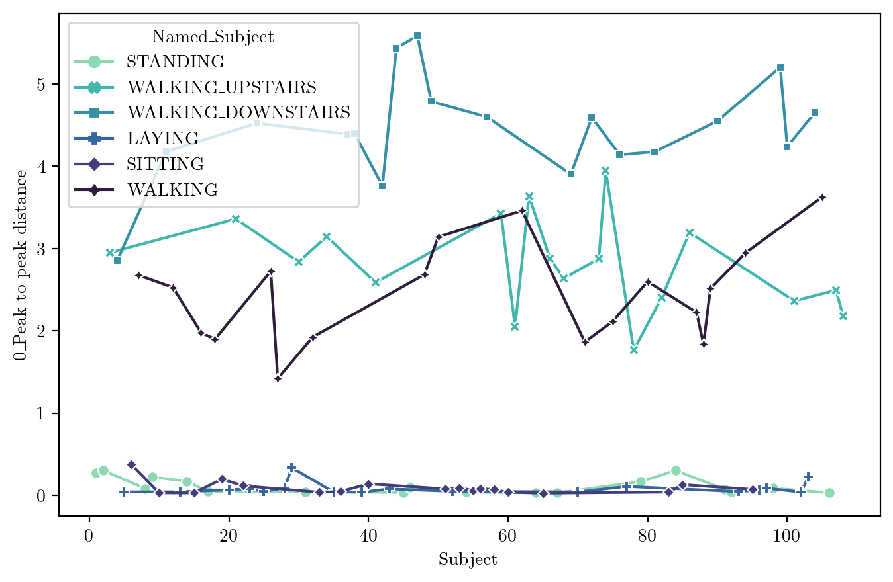
Mean Absolute Deviation
FeaturePlot(dfN, feature = features_sel[4])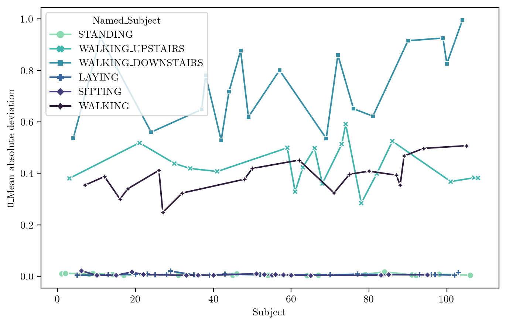
Our Selected Features
- Mean
- Area under Curve
- Peak-to-Peak Distance
- Variance
- Mean Absolute Deviation
- Maximum Frequency > Newly Added
- 0_Power bandwidth
- 0_Spectral centroid
- 0_Spectral decrease
- 0_Spectral distance
- 0_Spectral entropy
- 0_Spectral kurtosis
- 0_Spectral positive turning points
- 0_Spectral roll-off
- 0_Spectral roll-on
- 0_Spectral skewness
- 0_Spectral slope
- 0_Spectral spread
- 0_Spectral variation
Let’s add some spectral features too to the 5 already selected -> 18 Featured Data
f_sel = ["0_Area under the curve", "0_Mean", "0_Variance", "0_Peak to peak distance", "0_Mean absolute deviation", "0_Power bandwidth", "0_Spectral centroid", "0_Spectral decrease", "0_Spectral distance", "0_Spectral entropy", "0_Spectral kurtosis", "0_Spectral positive turning points", "0_Spectral roll-off", "0_Spectral roll-on", "0_Spectral skewness", "0_Spectral slope", "0_Spectral spread", "0_Spectral variation", "Labels", "Subject", "Named_Subject"]
dfFeat = dfN[f_sel]
dfFeat| 0_Area under the curve | 0_Mean | 0_Variance | 0_Peak to peak distance | 0_Mean absolute deviation | 0_Power bandwidth | 0_Spectral centroid | 0_Spectral decrease | 0_Spectral distance | 0_Spectral entropy | ... | 0_Spectral positive turning points | 0_Spectral roll-off | 0_Spectral roll-on | 0_Spectral skewness | 0_Spectral slope | 0_Spectral spread | 0_Spectral variation | Labels | Subject | Named_Subject | |
|---|---|---|---|---|---|---|---|---|---|---|---|---|---|---|---|---|---|---|---|---|---|
| 0 | 10.539676 | 1.058197 | 0.000441 | 0.276308 | 0.010246 | 6.212425 | 0.639077 | -46.590172 | -70826.079944 | 0.727967 | ... | 73.0 | 4.809619 | 0.0 | 4.906914 | -0.000905 | 2.304270 | 0.903439 | 5 | 1 | STANDING |
| 0 | 10.683732 | 1.072680 | 0.000440 | 0.302652 | 0.011577 | 9.018036 | 0.850078 | -41.721346 | -71473.612034 | 0.781145 | ... | 72.0 | 6.513026 | 0.0 | 4.151249 | -0.000889 | 2.828170 | 0.951706 | 5 | 2 | STANDING |
| 0 | 11.328686 | 1.139029 | 0.279613 | 2.951101 | 0.380676 | 5.410822 | 3.887285 | -2.433189 | -169599.425066 | 0.547602 | ... | 78.0 | 15.531062 | 0.0 | 1.869257 | -0.000657 | 5.062929 | 0.735493 | 2 | 3 | WALKING_UPSTAIRS |
| 0 | 11.865417 | 1.191914 | 0.442988 | 2.853736 | 0.537075 | 6.212425 | 4.521254 | -1.803868 | -204731.964203 | 0.592184 | ... | 80.0 | 16.132265 | 0.0 | 1.632312 | -0.000608 | 5.077597 | 0.698450 | 3 | 4 | WALKING_DOWNSTAIRS |
| 0 | 10.018665 | 1.005892 | 0.000026 | 0.042222 | 0.004001 | 13.827655 | 0.281477 | -151.116426 | -63806.084893 | 0.806408 | ... | 79.0 | 0.000000 | 0.0 | 7.583021 | -0.000933 | 1.753868 | 0.851520 | 6 | 5 | LAYING |
| ... | ... | ... | ... | ... | ... | ... | ... | ... | ... | ... | ... | ... | ... | ... | ... | ... | ... | ... | ... | ... | ... |
| 0 | 13.254750 | 1.331151 | 1.370835 | 4.655614 | 0.995919 | 5.010020 | 4.916563 | -1.218502 | -294434.103156 | 0.565975 | ... | 78.0 | 16.332665 | 0.0 | 1.444425 | -0.000578 | 5.130396 | 0.469507 | 3 | 104 | WALKING_DOWNSTAIRS |
| 0 | 11.826549 | 1.187985 | 0.436927 | 3.625210 | 0.507468 | 8.216433 | 5.361472 | -2.037178 | -167545.154695 | 0.492424 | ... | 81.0 | 16.533066 | 0.0 | 1.054264 | -0.000544 | 5.306712 | 0.819865 | 1 | 105 | WALKING |
| 0 | 10.618080 | 1.066065 | 0.000026 | 0.031092 | 0.004030 | 12.825651 | 0.275996 | -158.072078 | -67537.987024 | 0.818778 | ... | 87.0 | 0.000000 | 0.0 | 7.708759 | -0.000933 | 1.746586 | 0.950194 | 5 | 106 | STANDING |
| 0 | 11.132367 | 1.117178 | 0.246346 | 2.492894 | 0.382848 | 3.406814 | 3.119947 | -2.902698 | -160379.192325 | 0.469127 | ... | 81.0 | 12.725451 | 0.0 | 1.982978 | -0.000716 | 4.165671 | 0.738380 | 2 | 107 | WALKING_UPSTAIRS |
| 0 | 11.142791 | 1.118466 | 0.250806 | 2.180257 | 0.382529 | 5.410822 | 3.392079 | -2.718273 | -163036.885100 | 0.501480 | ... | 74.0 | 12.024048 | 0.0 | 1.739971 | -0.000695 | 4.187673 | 0.750399 | 2 | 108 | WALKING_UPSTAIRS |
108 rows × 21 columns
PCA on 18 Featured Data
scaler = StandardScaler()
X_scaled = scaler.fit_transform(dfFeat.iloc[:, :-3])
model = PCA(n_components = 2)
X_trainFeat_2D = model.fit_transform(X_scaled)
dfPCAFeat = pd.DataFrame(X_trainFeat_2D)
dfPCAFeat["Labels"] = y_train
dfPCAFeat| 0 | 1 | Labels | |
|---|---|---|---|
| 0 | -2.119269 | 1.516116 | 5 |
| 1 | -1.979877 | 1.739336 | 5 |
| 2 | 2.746499 | 0.798706 | 2 |
| 3 | 3.579078 | -0.146838 | 3 |
| 4 | -4.607082 | -0.719782 | 6 |
| ... | ... | ... | ... |
| 103 | 6.670144 | -2.509504 | 3 |
| 104 | 3.678577 | 0.154650 | 1 |
| 105 | -4.411194 | -1.856612 | 5 |
| 106 | 2.263685 | 0.657534 | 2 |
| 107 | 2.115628 | 1.393518 | 2 |
108 rows × 3 columns
18 Featured Data PCA to 2D
PCA_Plot(dfPCAFeat)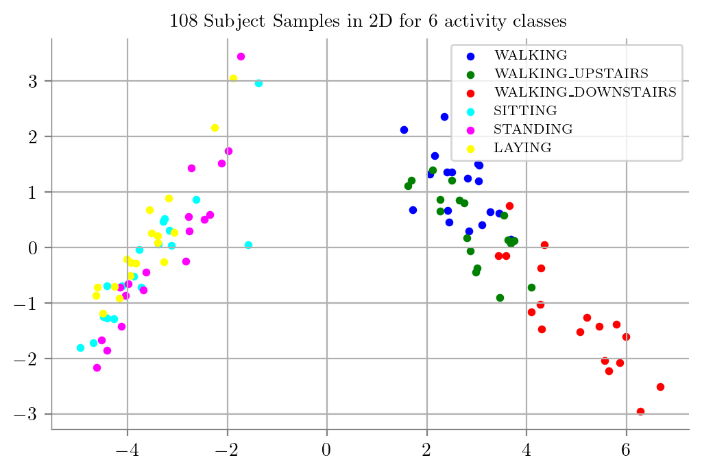
Extracting DataFrame for our 5 featurized Data
Featurized DataFrame
dfNewFeaturized = dfN[features_sel]
dfNewFeaturized| 0_Area under the curve | 0_Mean | 0_Variance | 0_Peak to peak distance | 0_Mean absolute deviation | Labels | Subject | Named_Subject | |
|---|---|---|---|---|---|---|---|---|
| 0 | 10.539676 | 1.058197 | 0.000441 | 0.276308 | 0.010246 | 5 | 1 | STANDING |
| 0 | 10.683732 | 1.072680 | 0.000440 | 0.302652 | 0.011577 | 5 | 2 | STANDING |
| 0 | 11.328686 | 1.139029 | 0.279613 | 2.951101 | 0.380676 | 2 | 3 | WALKING_UPSTAIRS |
| 0 | 11.865417 | 1.191914 | 0.442988 | 2.853736 | 0.537075 | 3 | 4 | WALKING_DOWNSTAIRS |
| 0 | 10.018665 | 1.005892 | 0.000026 | 0.042222 | 0.004001 | 6 | 5 | LAYING |
| ... | ... | ... | ... | ... | ... | ... | ... | ... |
| 0 | 13.254750 | 1.331151 | 1.370835 | 4.655614 | 0.995919 | 3 | 104 | WALKING_DOWNSTAIRS |
| 0 | 11.826549 | 1.187985 | 0.436927 | 3.625210 | 0.507468 | 1 | 105 | WALKING |
| 0 | 10.618080 | 1.066065 | 0.000026 | 0.031092 | 0.004030 | 5 | 106 | STANDING |
| 0 | 11.132367 | 1.117178 | 0.246346 | 2.492894 | 0.382848 | 2 | 107 | WALKING_UPSTAIRS |
| 0 | 11.142791 | 1.118466 | 0.250806 | 2.180257 | 0.382529 | 2 | 108 | WALKING_UPSTAIRS |
108 rows × 8 columns
PCA on our chosen 5 Featurized Data
scaler = StandardScaler()
X_scaled = scaler.fit_transform(dfNewFeaturized.iloc[:, :-3])
model = PCA(n_components = 2)
X_trainOurF_2D = model.fit_transform(X_scaled)
dfPCAFeat = pd.DataFrame(X_trainFeat_2D)
dfPCAFeat["Labels"] = y_train
dfPCAFeat| 0 | 1 | Labels | |
|---|---|---|---|
| 0 | -2.408634 | 1.329825 | 5 |
| 1 | -2.039138 | 1.697191 | 5 |
| 2 | 2.543982 | 0.746600 | 2 |
| 3 | 3.471005 | -0.131893 | 3 |
| 4 | -4.349947 | -0.661725 | 6 |
| ... | ... | ... | ... |
| 103 | 6.572669 | -2.406062 | 3 |
| 104 | 3.731875 | 0.248615 | 1 |
| 105 | -4.227187 | -1.883089 | 5 |
| 106 | 1.883058 | 0.470228 | 2 |
| 107 | 1.891408 | 1.328787 | 2 |
108 rows × 3 columns
dfPCAOurF = pd.DataFrame(X_trainOurF_2D)
dfPCAOurF["Labels"] = y_train
dfPCAOurF| 0 | 1 | Labels | |
|---|---|---|---|
| 0 | -1.591114 | -0.091353 | 5 |
| 1 | -1.427712 | -0.222992 | 5 |
| 2 | 0.880008 | -0.234883 | 2 |
| 3 | 1.874859 | -0.287865 | 3 |
| 4 | -2.220049 | 0.391626 | 6 |
| ... | ... | ... | ... |
| 103 | 5.704453 | 0.657241 | 3 |
| 104 | 1.976794 | -0.320237 | 1 |
| 105 | -1.580248 | -0.149378 | 5 |
| 106 | 0.502482 | -0.098926 | 2 |
| 107 | 0.439838 | -0.079656 | 2 |
108 rows × 3 columns
5 Featurized PCA datapoints
PCA_Plot(dfPCAOurF)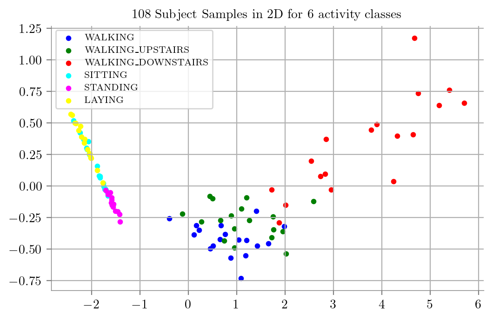
PCA on our raw timeseries data
scaler = StandardScaler()
X_scaled = scaler.fit_transform(X_train_TS)
model = PCA(n_components = 2)
X_train_2D = model.fit_transform(X_scaled)dfPCA = pd.DataFrame(X_train_2D)
dfPCA["Labels"] = y_train
dfPCA| 0 | 1 | Labels | |
|---|---|---|---|
| 0 | 0.171000 | -0.058009 | 5 |
| 1 | -0.008648 | 0.128133 | 5 |
| 2 | 2.803362 | 2.955462 | 2 |
| 3 | 2.856289 | -7.198528 | 3 |
| 4 | 0.192954 | -0.168915 | 6 |
| ... | ... | ... | ... |
| 103 | 6.098028 | 41.782163 | 3 |
| 104 | -4.212006 | 8.896049 | 1 |
| 105 | 0.105575 | 0.038338 | 5 |
| 106 | 2.634434 | 0.671926 | 2 |
| 107 | 4.157850 | 2.671812 | 2 |
108 rows × 3 columns
Raw Timeseries PCA datapoints
PCA_Plot(dfPCA)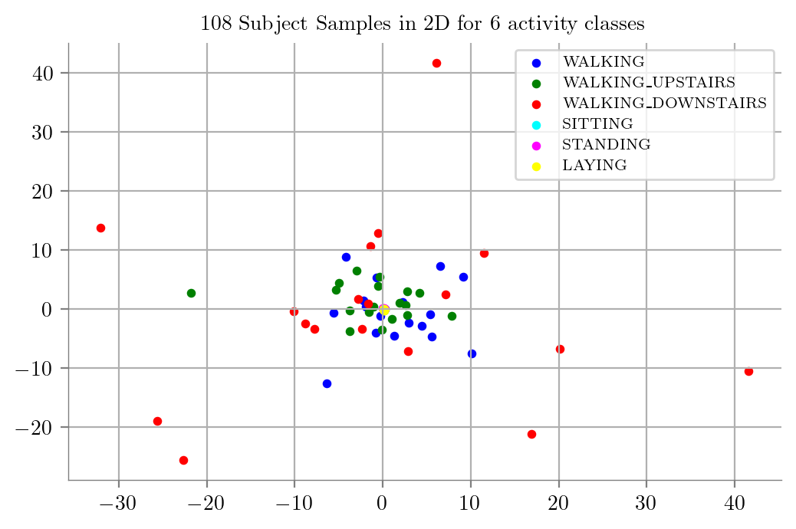
PCA on entire 383 Featurized Data
scaler = StandardScaler()
X_scaled = scaler.fit_transform(dfN.iloc[:, :-3])
model = PCA(n_components = 2)
X_trainF_2D = model.fit_transform(X_scaled)dfPCAF = pd.DataFrame(X_trainF_2D)
dfPCAF["Labels"] = y_train
dfPCAF| 0 | 1 | Labels | |
|---|---|---|---|
| 0 | -9.656330 | 1.259515 | 5 |
| 1 | -9.507877 | 1.189473 | 5 |
| 2 | 0.904597 | -3.530496 | 2 |
| 3 | 9.379393 | -3.324217 | 3 |
| 4 | -10.632995 | 2.040261 | 6 |
| ... | ... | ... | ... |
| 103 | 34.743740 | 3.095295 | 3 |
| 104 | 14.424106 | -3.185719 | 1 |
| 105 | -10.430969 | 1.901364 | 5 |
| 106 | -0.354879 | -4.074157 | 2 |
| 107 | -0.018798 | -4.441626 | 2 |
108 rows × 3 columns
383 Featurized PCA Datapoints
PCA_Plot(dfPCAF)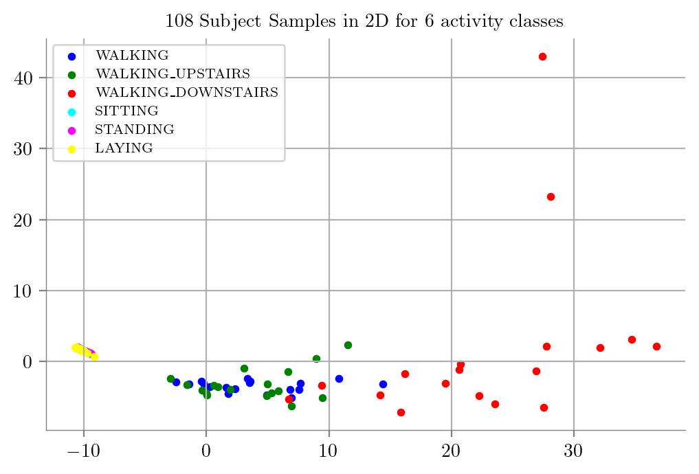
TESTING PART
dfNewFeaturized has \(5\) selected features and dfFeat has \(18\) selected features
Template Funtion to Featurize a Dataset
def Featuriser(XTimeSeries, YTimeSeries, features):
cfg = tsfel.get_features_by_domain()
df = pd.DataFrame(XTimeSeries)
dataFrames = []
for i in df.index:
dataFrames.append(tsfel.time_series_features_extractor(cfg, df.iloc[i,:], fs = 50))
dfN = pd.concat(dataFrames, axis = 0)
dfN["Labels"] = YTimeSeries
namedLabel = [classesN[i] for i in YTimeSeries]
dfN["Named_Subject"] = namedLabel
dfN["Subject"] = range(1, len(XTimeSeries) + 1)
dfNFeaturized = dfN[features]
return dfNFeaturizedThe features we wish to select for our dataframe
# 5 Features
features_sel = ["0_Area under the curve", "0_Mean", "0_Variance", "0_Peak to peak distance", "0_Mean absolute deviation", "Labels", "Subject", "Named_Subject"]
# 18 Features
f_sel = ["0_Area under the curve", "0_Mean", "0_Variance", "0_Peak to peak distance", "0_Mean absolute deviation", "0_Power bandwidth", "0_Spectral centroid", "0_Spectral decrease", "0_Spectral distance", "0_Spectral entropy", "0_Spectral kurtosis", "0_Spectral positive turning points", "0_Spectral roll-off", "0_Spectral roll-on", "0_Spectral skewness", "0_Spectral slope", "0_Spectral spread", "0_Spectral variation", "Labels", "Subject", "Named_Subject"]Featurizing the TEST dataset for our chosen \(5\) features
dfNF_test = Featuriser(X_test_TS, y_test, features_sel)Decision Tree Classifier on our 5 Featurized Data
Classifier for \(5\) Featured dfNewFeaturized
model = DecisionTreeClassifier()
clfg = model.fit(dfNewFeaturized.iloc[:, :-3], dfNewFeaturized.iloc[:, 5])
y_pred = clfg.predict(dfNF_test.iloc[:, :-3])
y_predarray([3, 3, 6, 2, 6, 5, 6, 1, 2, 3, 5, 6, 2, 5, 2, 4, 5, 5, 1, 6, 5, 1,
2, 5, 2, 1, 2, 4, 3, 6, 4, 6, 4, 2, 3, 1])y_testarray([3, 3, 6, 2, 6, 5, 6, 1, 1, 3, 5, 6, 1, 5, 3, 4, 5, 5, 1, 6, 4, 1,
2, 5, 2, 1, 3, 6, 3, 4, 4, 4, 4, 2, 2, 2])Accuracy Score for decision tree classifier on TEST data trained on our 5 featurized dataset
accuracy_score(y_test, y_pred)0.7222222222222222Classification Report for decision tree classifier on TEST data trained on our 5 featurized dataset
print(classification_report(y_test, y_pred, labels = np.unique(y_pred))) precision recall f1-score support
1 0.80 0.67 0.73 6
2 0.50 0.67 0.57 6
3 0.80 0.67 0.73 6
4 0.75 0.50 0.60 6
5 0.86 1.00 0.92 6
6 0.71 0.83 0.77 6
accuracy 0.72 36
macro avg 0.74 0.72 0.72 36
weighted avg 0.74 0.72 0.72 36
Confusion Matrix for the above prediction
cm = confusion_matrix(y_test, y_pred)
df_cm = pd.DataFrame(cm, index = [classT for classT in classes], columns = [classT for classT in classes])
df_cm| WALKING | WALKING_UPSTAIRS | WALKING_DOWNSTAIRS | SITTING | STANDING | LAYING | |
|---|---|---|---|---|---|---|
| WALKING | 4 | 2 | 0 | 0 | 0 | 0 |
| WALKING_UPSTAIRS | 1 | 4 | 1 | 0 | 0 | 0 |
| WALKING_DOWNSTAIRS | 0 | 2 | 4 | 0 | 0 | 0 |
| SITTING | 0 | 0 | 0 | 3 | 1 | 2 |
| STANDING | 0 | 0 | 0 | 0 | 6 | 0 |
| LAYING | 0 | 0 | 0 | 1 | 0 | 5 |
Template Code for Displaying Confusion Matrix
## flag = 1 for a single plot and 0 for subplots for 2 - 8 depths
def confMatrix(dataFrame, flag = 1, accuracies = None):
if flag:
plt.figure(figsize = (6, 6))
ax = sns.heatmap(dataFrame, annot = True, cmap = "PuBu")
plt.setp(ax.get_xticklabels(), rotation = 45, fontsize = 8)
plt.setp(ax.get_yticklabels(), fontsize = 8)
plt.ylabel("True label", fontsize = 18)
plt.xlabel("Predicted label", fontsize = 18)
plt.title(f"Accuracy = {accuracy_score(y_test, y_pred)*100: .4f}%", fontweight = "bold", fontsize = 13)
plt.show()
else:
fig, axes = plt.subplots(3, 3, figsize = (25, 25))
axes = axes.flatten()
for i, df in enumerate(dataFrame):
ax = sns.heatmap(df, annot = True, ax = axes[i], cbar = False, cmap = "PuBu")
plt.setp(ax.get_xticklabels(), rotation = 45, fontsize = 6)
plt.setp(ax.get_yticklabels(), fontsize = 8)
ax.set_title(f"Depth = {i + 2}\nAccuracy = {accuracies[i] * 100: .4f}%", fontsize = 10)
ax.set_ylabel("True label", fontsize = 12)
ax.set_xlabel("Predicted label", fontsize = 12)
plt.delaxes(axes[7])
plt.delaxes(axes[8])
plt.tight_layout()
plt.subplots_adjust(wspace = 1.1, hspace = 1.1)
plt.show()Confusion Matrix for the model trained on our 5-featured Dataset
confMatrix(df_cm, flag = 1)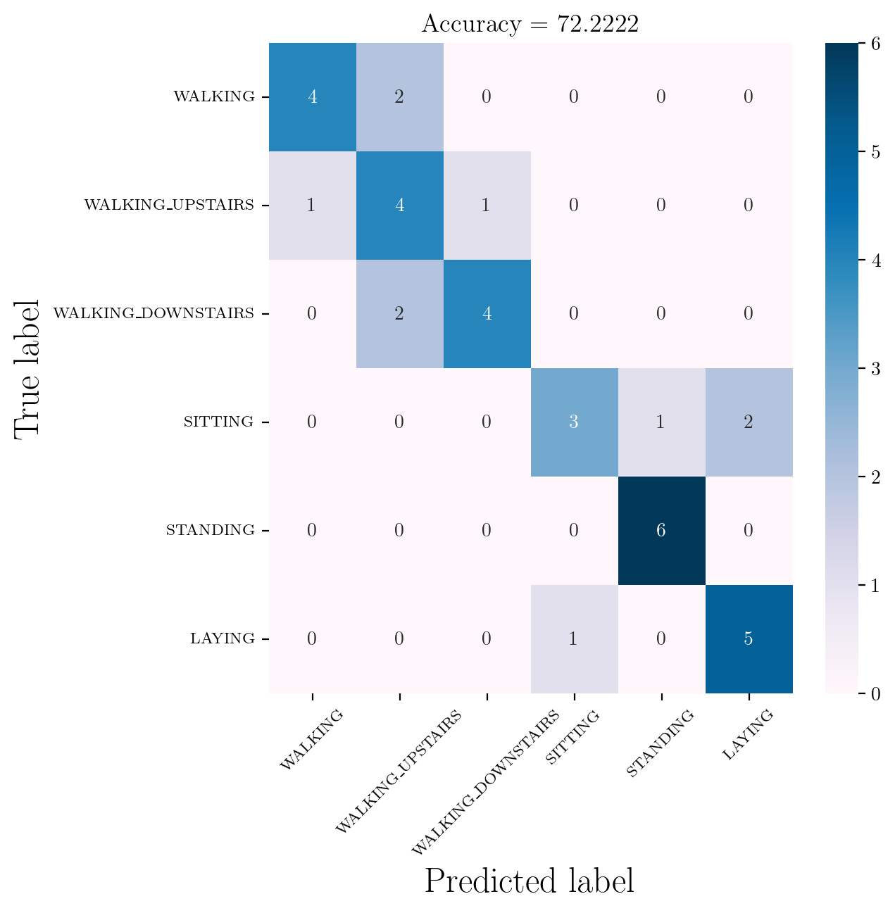
Fetching the Connfusion Matrices, Class Reports, Accuracies for Depth \((2 - 8)\) Tree on 5-Featurized Data
confusion_matrices, class_reports, class_reports_dict, accuracies = [], [], [], []
for i in range(2, 9):
model = DecisionTreeClassifier(max_depth = i, random_state = 42)
clfg = model.fit(dfNewFeaturized.iloc[:, :-3], dfNewFeaturized.iloc[:, 5])
y_pred = clfg.predict(dfNF_test.iloc[:, :-3])
pred, actual = y_pred, y_test
cm = confusion_matrix(actual, pred)
confusion_matrices.append(pd.DataFrame(cm, index = [classT for classT in classes], columns = [classT for classT in classes]))
class_reports.append(classification_report(actual, pred, labels = np.unique(pred)))
class_reports_dict.append(classification_report(actual, pred, labels = np.unique(pred), output_dict = True))
accuracies.append(accuracy_score(actual, pred))\(7\) Confusion Matrices for 5-Featurized Data
confMatrix(confusion_matrices, flag = 0, accuracies = accuracies)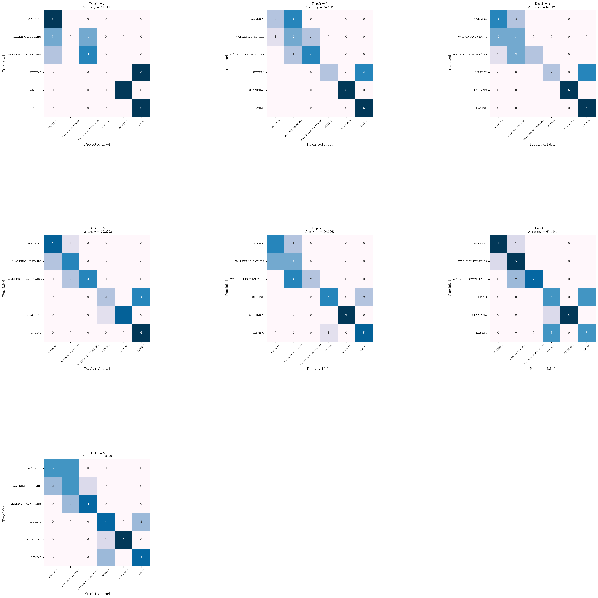
Decision Tree Classifier on RAW TimeSeries Data X_train_TS
model = DecisionTreeClassifier()
clfg = model.fit(X_train_TS, y_train)
y_pred1 = clfg.predict(X_test_TS)
cm1 = confusion_matrix(y_test, y_pred1)
df_cm1 = pd.DataFrame(cm1, index = [classT for classT in classes], columns = [classT for classT in classes])
df_cm1| WALKING | WALKING_UPSTAIRS | WALKING_DOWNSTAIRS | SITTING | STANDING | LAYING | |
|---|---|---|---|---|---|---|
| WALKING | 3 | 1 | 1 | 1 | 0 | 0 |
| WALKING_UPSTAIRS | 2 | 1 | 1 | 1 | 1 | 0 |
| WALKING_DOWNSTAIRS | 0 | 3 | 2 | 1 | 0 | 0 |
| SITTING | 0 | 0 | 0 | 4 | 0 | 2 |
| STANDING | 0 | 0 | 0 | 1 | 5 | 0 |
| LAYING | 0 | 0 | 0 | 5 | 0 | 1 |
Confusion Matrix for the model trained on RAW TimeSeries Data
confMatrix(df_cm1, flag = 1)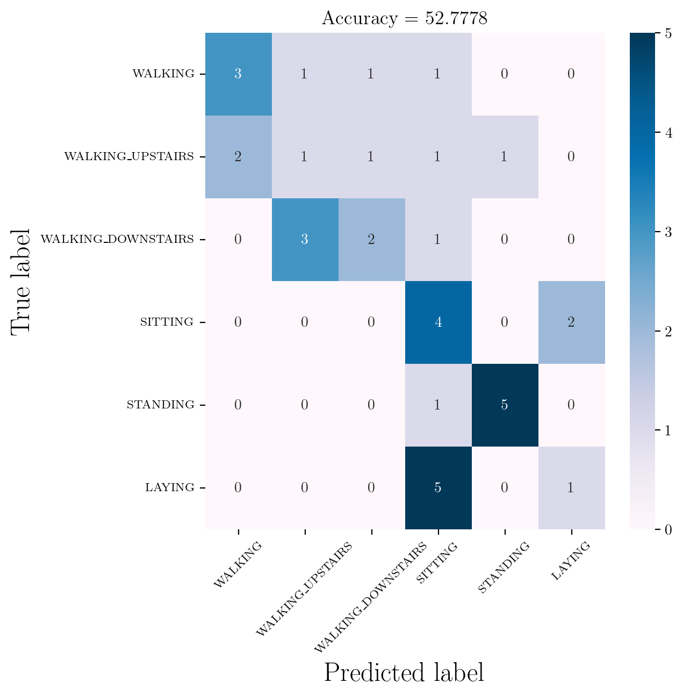
Fetching the Connfusion Matrices, Class Reports, Accuracies for Depth \((2 - 8)\) Tree on Raw Time Series Data
confusion_matrices1, class_reports1, class_reports_dict1, accuracies1 = [], [], [], []
for i in range(2, 9):
model = DecisionTreeClassifier(max_depth = i,random_state=42)
clfg = model.fit(X_train_TS, y_train)
y_pred = clfg.predict(X_test_TS)
pred, actual = y_pred, y_test
cm = confusion_matrix(actual, pred)
confusion_matrices1.append(pd.DataFrame(cm, index = [classT for classT in classes], columns = [classT for classT in classes]))
class_reports1.append(classification_report(actual, pred, labels = np.unique(pred)))
class_reports_dict1.append(classification_report(actual, pred, labels = np.unique(pred), output_dict = True))
accuracies1.append(accuracy_score(actual, pred))\(7\) Confusion Matrices for Raw Time Series Data
confMatrix(confusion_matrices1, flag = 0, accuracies = accuracies1)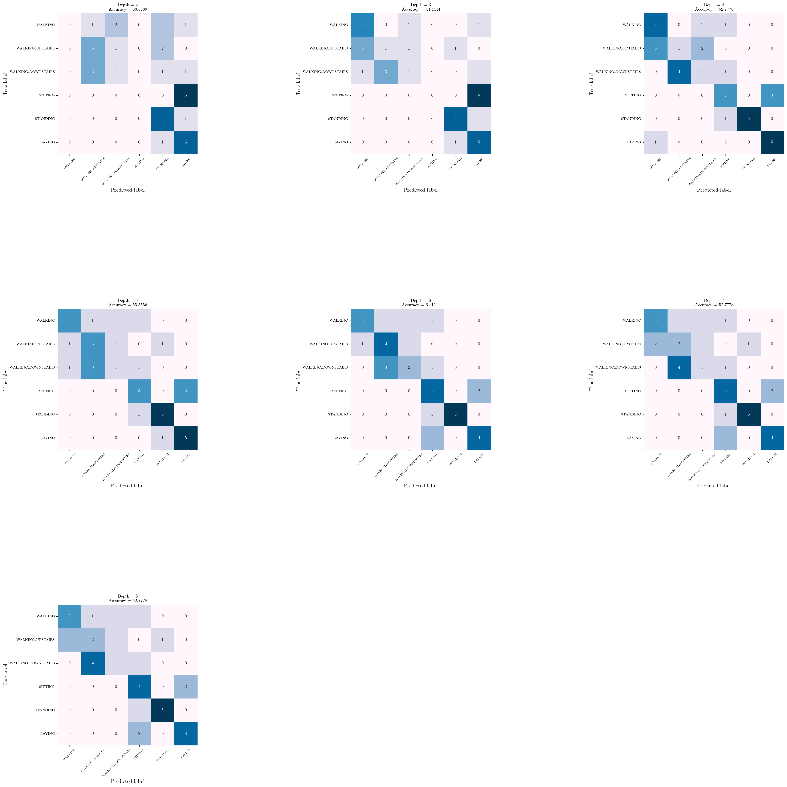
Accuracy Comparison for both RAW TimeSeries and 5-Featurized Data
print(accuracies)
print(accuracies1)[0.6111111111111112, 0.6388888888888888, 0.6388888888888888, 0.7222222222222222, 0.6666666666666666, 0.6944444444444444, 0.6388888888888888]
[0.3888888888888889, 0.4444444444444444, 0.5277777777777778, 0.5555555555555556, 0.6111111111111112, 0.5277777777777778, 0.5277777777777778]plt.plot(range(2, 9), accuracies1, color = "r", marker = "o")
plt.plot(range(2, 9), accuracies, color = "g", marker = "s")
plt.xlabel("Decision Tree Depth")
plt.ylabel("Accuracies")
plt.title("Accuracy Variation of Test-Train vs. Depth")
plt.legend(["Raw Data", "Featurized Data"])
plt.grid()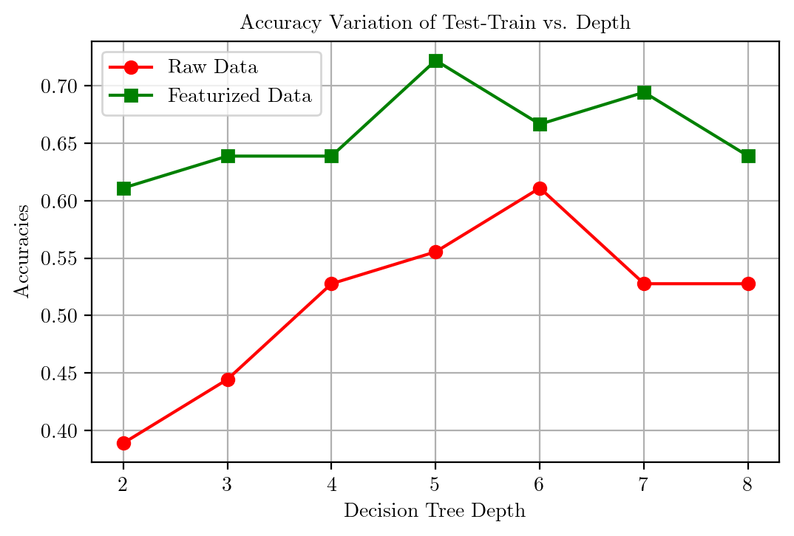
plt.scatter(accuracies, accuracies1, marker = "x", color = "deeppink", s = 30)
plt.xlabel("Accuracies for Decision Tree on Featurized Data")
plt.ylabel("Accuracies for Decision Tree on Raw Data")
plt.grid()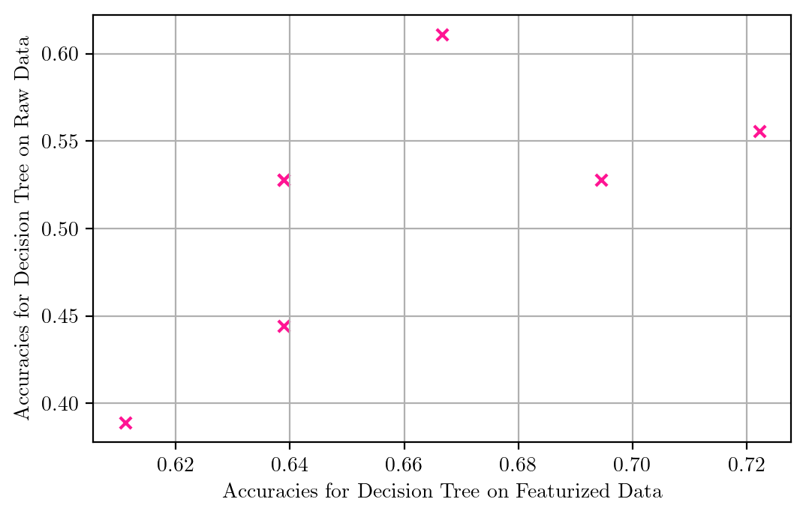
Now same for \(18\) Featured dfFeat
Firstly Featurize the Test Dataset according to the \(18\) features
dfNF_test = Featuriser(X_test_TS, y_test, f_sel)model = DecisionTreeClassifier()
clfg = model.fit(dfFeat.iloc[:, :-3], dfFeat.iloc[:, 18])
y_pred = clfg.predict(dfNF_test.iloc[:, :-3])
y_predarray([3, 3, 6, 2, 6, 4, 6, 1, 1, 2, 4, 6, 2, 5, 2, 4, 5, 5, 2, 6, 4, 1,
2, 5, 3, 2, 2, 4, 3, 4, 6, 6, 4, 3, 3, 1])y_testarray([3, 3, 6, 2, 6, 5, 6, 1, 1, 3, 5, 6, 1, 5, 3, 4, 5, 5, 1, 6, 4, 1,
2, 5, 2, 1, 3, 6, 3, 4, 4, 4, 4, 2, 2, 2])Accuracy Score for decision tree classifier on TEST data trained on our 18 featurized dataset
accuracy_score(y_test, y_pred)0.5833333333333334Classification Report for decision tree classifier on TEST data trained on our 18 featurized dataset
print(classification_report(y_test, y_pred, labels = np.unique(y_pred))) precision recall f1-score support
1 0.75 0.50 0.60 6
2 0.25 0.33 0.29 6
3 0.50 0.50 0.50 6
4 0.57 0.67 0.62 6
5 1.00 0.67 0.80 6
6 0.71 0.83 0.77 6
accuracy 0.58 36
macro avg 0.63 0.58 0.60 36
weighted avg 0.63 0.58 0.60 36
cm = confusion_matrix(y_test, y_pred)
df_cm = pd.DataFrame(cm, index = [classT for classT in classes], columns = [classT for classT in classes])confMatrix(df_cm, flag = 1)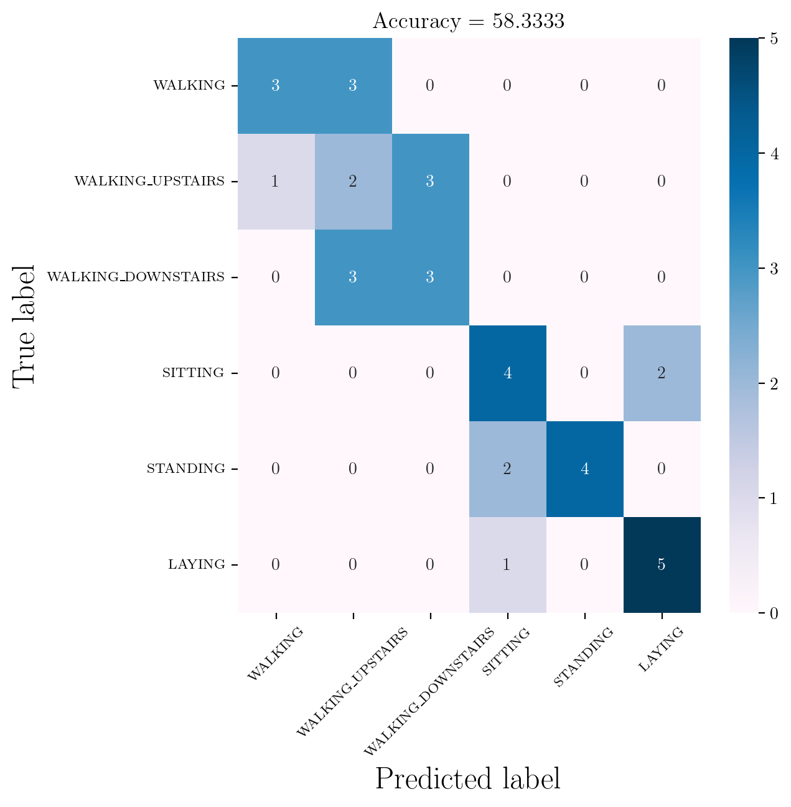
Fetching the Connfusion Matrices, Class Reports, Accuracies for Depth \((2 - 8)\) Tree on 18-Featurized Data
confusion_matrices, class_reports, class_reports_dict, accuracies = [], [], [], []
for i in range(2, 9):
model = DecisionTreeClassifier(max_depth = i, random_state = 42)
clfg = model.fit(dfFeat.iloc[:, :-3], dfFeat.iloc[:, 18])
y_pred = clfg.predict(dfNF_test.iloc[:, :-3])
pred, actual = y_pred, y_test
cm = confusion_matrix(actual, pred)
confusion_matrices.append(pd.DataFrame(cm, index = [classT for classT in classes], columns = [classT for classT in classes]))
class_reports.append(classification_report(actual, pred, labels = np.unique(pred)))
class_reports_dict.append(classification_report(actual, pred, labels = np.unique(pred), output_dict = True))
accuracies.append(accuracy_score(actual, pred))\(7\) Confusion Matrices for 18-Featurized Data
confMatrix(confusion_matrices, flag = 0, accuracies = accuracies)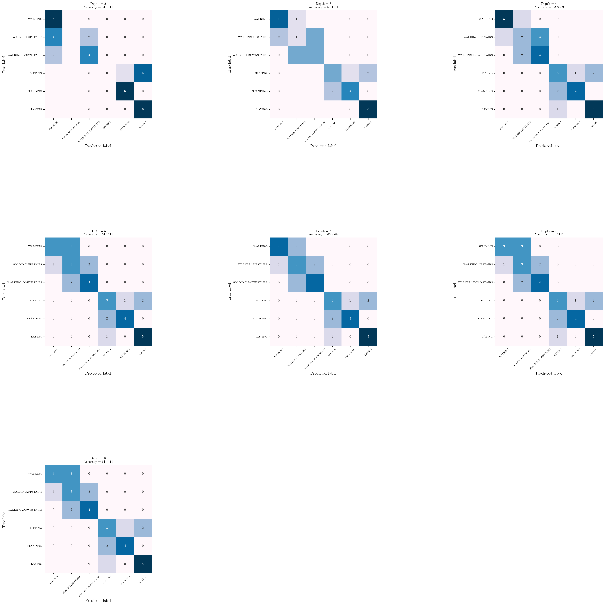
Accuracy Comparison for both RAW TimeSeries and 18-Featurized Data
plt.plot(range(2, 9), accuracies1, color = "r", marker = "o")
plt.plot(range(2, 9), accuracies, color = "g", marker = "s")
plt.xlabel("Decision Tree Depth")
plt.ylabel("Accuracies")
plt.title("Accuracy Variation of Test-Train vs. Depth")
plt.legend(["Raw Data", "Featurized Data"])
plt.grid()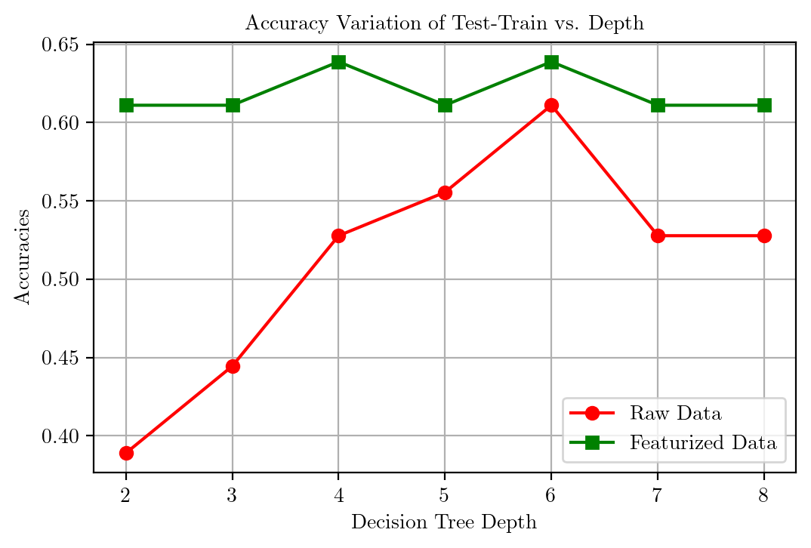